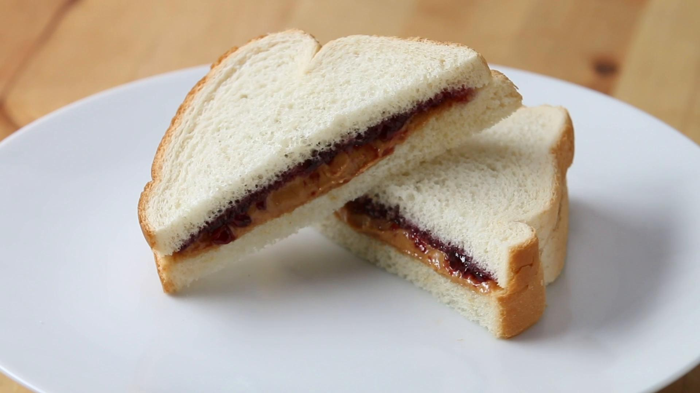

The Perfect PB&J

Description
If it ain't broken, don't fix it. The classic Peanut Butter and Jelly sandwich has been around for hundreds of years, and is still beloved due to its simplicity and deliciousness.
Creamy, rich peanut butter and sweet, tart jelly combine to provide this wonderful combination of flavors. Be sure to have a tall, ice-cold glass of milk ready!
Ingredients
- 2 slices of Wonder bread
- 1 tablespoon of creamy or crunchy peanut butter
- 1 tablespoon of jelly in the flavor of your choice
Steps
- Smear the peanut butter on one piece of bread with a knife
- Smear the jelly on the other side
- Combine bread
- To make it taste better, cut diagonally across the middle
- Enjoy!